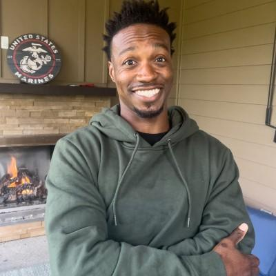

Defense AI infrastructure engineering
Kenny Sheridan
Infrastructure Product Engineer for AI, robotics, edge, agentic workflows, and supercomputing systems.
Systems engineer with 10+ years of experience turning complex infrastructure into production-ready platforms.
I build and evaluate reproducible AI-first, robotics, edge, and datacenter systems for agentic workloads, including offline AI and HPC for regulated or contested environments, bare-metal GPU orchestration, Kubernetes control planes, distributed Raft-backed reconciliation loops, high-performance networking and storage, QEMU/KVM sandboxing, observability, benchmarking, workload-to-hardware matching, and technical stack/infrastructure viability assessments.
My experience spans medium-sized companies scaling into Fortune 500 operations, as well as pre-seed through post-Series A startups valued from $300M to $1B. I work well in startup environments where priorities change quickly and ideas need to become shipped systems without losing reliability or technical depth. I’m a former U.S. Marine Corps meteorology instructor with hands-on HPC delivery experience across NVIDIA and AMD platforms for AI/ML, robotics, edge, simulation, and datacenter workloads.

Experience
Member of Technical Staff - Infrastructure Product | Andromeda
- Serve as a senior product-engineering contributor shaping AI-first infrastructure product direction across robotics, edge, Kubernetes, observability, platform delivery, and customer-facing workflows.
- Delivered major infrastructure products on compressed iteration cycles, translating ambiguous product and infrastructure requirements into shipped systems, automation, and operational patterns.
- Drive Kubernetes platform work beyond observability, including deployment workflows, control-plane integration, cluster operations, developer experience, and productized infrastructure paths.
- Create rich Kubernetes and infrastructure product documentation for customer-facing workflows, designed for online hosting, mobile viewing, and clear operational adoption.
- Use Nix, Kubernetes, and QEMU/KVM to build reproducible package, sandboxing, isolation, deployment, and repeatable infrastructure validation environments.
- Guide performance engineering, system modeling, cache strategy, storage evaluation, offload analysis, and workload placement so products reach market quickly without losing operational reliability.
Senior Supercomputing Infrastructure Engineer | San Francisco Compute Company
- Led automated bring-up for 2,000 NVIDIA H100 GPUs, moving bare metal into operational Kubernetes clusters through a single-command Rust-based deployment workflow.
- Scaled onboarding from 8 nodes to hundreds of GPU nodes within weeks, reducing product iteration time by eliminating manual provisioning across hardware, networking, and company infrastructure integration.
- Deployed distributed supercomputing infrastructure globally for GPU marketplace capacity, with emphasis on scalable utilization, reliability, and operational repeatability.
- Built and open-sourced Rust tooling for serialized infrastructure inventory plus object-storage and network throughput profiling across bare-metal AI/HPC environments.
- Designed a private Linux-side hardware discovery and lifecycle agent for bare-metal fleet introspection, host validation, and infrastructure control-plane integration.
- Optimized compute, SDN, network fabric, high-performance storage, performance testing, custom Kubernetes controllers/operators, resource management, near-metal validation, and repeatable systems setup.
Senior AI and HPC Infrastructure Engineer | TensorWave
- Architected on-premises AMD MI300X GPU clusters using EPYC CPUs and RDMA over Converged Ethernet on traditional TCP/IP networks.
- Benchmarked NVIDIA InfiniBand and AMD RoCE designs, including high-bandwidth all_reduce testing over 800G switching infrastructure.
- Designed vendor-agnostic AI/ML infrastructure patterns capable of scaling toward hundreds of nodes while reducing accelerator lock-in.
- Created deployment documentation for GPU cluster setup, configuration, and operational handoff.
Senior Hardware Infrastructure Automation Engineer | ServiceNow
- Engineered HPC system testing software for distributed enterprise infrastructure, including stress validation, benchmarking, and reliability assessment workflows.
- Validated infrastructure hardware for IL5, FedRAMP, and FedRAMP High environments, including Thales SafeNet security devices.
- Led migration of internal automation from Python and Bash to Go, improving efficiency across heterogeneous hardware environments.
- Built Redfish-based SKU auditing, NIC benchmarking, and GitLab CI/CD workflows for hardware-software validation.
Senior Cloud Hardware Performance Test Engineer | ServiceNow
- Led hardware performance testing across storage, networking, BIOS, firmware, PCIe, FPGAs, SmartNICs, Smart Storage cards, NVMe, Linux filesystems, Weka, VAST, and Ceph.
- Worked with ODMs, system engineers, CTO stakeholders, and product teams to refine infrastructure roadmaps and train engineers on repeatable test methods.
System Administrator | NexLevel Information Technology
- Provided Tier 3 Unix and Windows server support for biometric systems serving 300+ remote clients, including storage recovery, monitoring scripts, and production baseline improvements.
Technical Instructor of Meteorology | U.S. Marine Corps
- Administered two modular data centers, maintained METMF(R) computing infrastructure, virtualized instructional environments, and managed WAN-connected remote sensing sites.
- Produced 300+ surface observations, 100+ forecasts, and 50+ weather warnings cited in Navy and Marine Corps Achievement Medal recognition.
Selected Engineering Work
Repeatable AI infrastructure environments
Set up deterministic infrastructure environments that use Nix for secure packages, QEMU/KVM for sandboxed validation, and caching strategies to serve AI models quickly.
AI-first infrastructure product delivery
Delivered customer-facing and internal infrastructure products at 9,000+ GPU scale, balancing fast iteration, operational adoption, Kubernetes platform work, and production reliability.
Automated GPU bring-up and onboarding
Single-command workflow that deploys hardware, joins company infrastructure, configures networking, and removes manual intervention from large-scale GPU node onboarding.
Infrastructure inventory and throughput profiling
Built public tooling for serialized hardware reports and portable object-storage and network throughput profiling, supporting faster validation across bare-metal AI/HPC fleets.
Bare-metal lifecycle agent
Designed private host-side agent work for hardware discovery, lifecycle state, fleet validation, and integration with infrastructure control planes.
Multi-node GPU cluster networking
Designed vendor-agnostic topologies across AMD and NVIDIA accelerators, including RoCE on TCP/IP networks and InfiniBand benchmarking for large-scale AI/HPC clusters.
Export tip: open this file in a browser, print, choose "Save to PDF", and enable background graphics. Verify exact current title and dates before external submission.